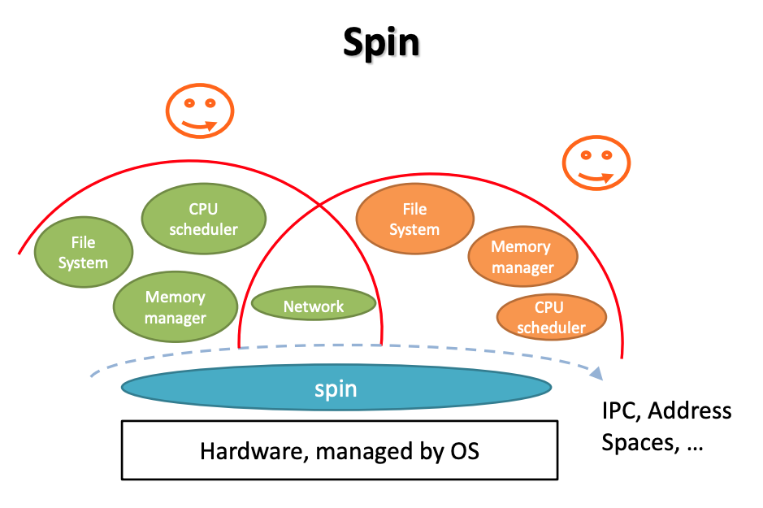

Record the critiques that I made for the graduate course CS202: Advanced Opearting System in UCR.
- SPIN
- Exokernel
- Scheduler Activation - Redesign the user-level thread
- Lottery Scheduler Algorithm
SPIN OS
1. Introduction
This paper named “Extensibility, Safety and Performance in the SPIN Operating System”, was developed by the Washington University in 1995. The history context of the paper is the time when the operating system is still in the phase of researching rather than stable version. And the monolithic operating system at that time is the mainstream among all the os. In this paper, the author challenges the view that the extenability and safety could coexist at the same operating system.
2. Summary
By utilizing four techniques at the level of the language or run-time services, the goal of the operating system is achieved. They are co-location, enforced modularity, logical protection domains and dynamic call binding.
The core system services like memory management and thread management are linked to the kernel space by the co-location technique, in which case greatly reduce the overhead of the context switching. While the modularity and logical proection domains are mainly responsible for the safety of the system.

The structure of the SPIN OS is kind of like the microkernel architecture. But the base services like the memory mangement, CPU scheduler, etc. could be set in the different application address space. Actually, the modules are registered and co-located to the base of the application. In a word, extend the kernel at runtime through statically-checked extensions. Cornell Slides
3. Critical Evaluation
Overrall, the authors do achieve their goals on the operating system. And here are my critiques on the implementation of the SPIN operating system.
3.1 Concerns on Co-location
The operating system will link the user-defined scheduler and memory management details into the kernel space, in order to reduce the overhead of the operations. However, it should be noted that the user program is unsafe compared to the system itself. And there are chances that the user-defined code in the kernel space could be buggy.
In this case, extra work has been done to ensure that then extension should at least not influence the base kernel if the bugs appear, which should be guaranteed by the programming language.
3.2 Performance Evaluation
In the protected communication phase, the author compares the metrics on the null procedure call from different operating systems, which does not requires any parameters or execution commands. Though this procedure could prove that in this case, the SPIN operating system performs better than the other two systems. However, personally speaking, I don’t think it is enough to say that in the protected communication part, the SPIN operating system works better than the other two. Becase the major overhead in the SPIN procedure lays in the security issue.
The performance will differ a lot when there are parameters in the calling procedure. In this case, no security problems has been proved to be solved. The monolithic operating systems dive into the kernel space to avoid the potential issues. While the SPIN operating system doesn’t bother that. Since SPIN operating system would have to call the logical protection domain to resolve the parameter so that it could load the parameters, which means that the null procedure is not enough to be the micrometrics in this case.
3.3 Thread Management
The result in this part is reasonable. Since we can directly regards the thread in SPIN operating system is the user-level thread, in which case reduces a lot of overhead in the context switching compared to the monolithic operating sytem.
But it is more extenable than the simple user-level thread. Because SPIN could implement the thread in all three types: kernel thread, user-level thread and layed thread.
3.4 SPIN as a Software Layered on Top of the Hardware
We could easily notice that the major part of the SPIN lays inside the operating system. In another word, the SPIN operating system implements a lot of features in the runtime. In this sense, it’s like we are implementing another user operating system on top of the real operating system.
4. Conclusion
I think that the author succeeds in inventing an operating system like that by fully making use of the features of the complier and lanuage runtime services. However, though the SPIN operating system is very powerful, it is also very complex for the normal programmer to develop their own program due to the reason that the os developer handle the complexity from the kernel to the os users.
Exokernel
Question on the 17-th page of the slides.
Motivation
“Exokernel: An Operating System Architecture for Application-Level Resource Management” was written by the MIT in 1995. The motivation of the paper is to achieve a safe, fast and extensible operating system.
Implementation Summary
Secure binding
physical memory
It is implemented by the self-authenticating and address translation hardwre: every page is marked with with the least capability to read or write. => issue: different hardware support may result in different physical memory secure binding.
network
implemented by the pre-defined packet filter, which could filt the packets to the specific application according to the content of the packet. => issue: the user-defined packet filter may not be secure, and could be used maliciously.
optimization
downloading code
install the machine code into the kernel to reduce the cost of context switching
visible resource revocation
The resources allocated to the application could be explictly released by the application itself.
abort protocol
In case that the bug exists, the aborting process should be forced to finish.
Conclusion
The principle of the exokernel is
the lower the level of a primitive, the more efficiently it can be implemented, and the more latitude it grants to implementors of higher-level abstractions.
And in the implementation, the author succeeds in doing so. The application could be granted a lot of privileges to access to the resources of operating system. For example, database could achieve a better performance with a concrete control on the index and disk.
In this way, the exokernel would only be responsible for the system recourses protection and allocation. And in order to offer some popular system services and the template of the extension, the library operating system is developed.
Lottery Scheduling
Summary
The paper is motivated by the fact that most scheduling algorithms are designed to be ad-hoc rather than generalized. And in the hope of achieving a generalized algorithm, the author develops a probalistic algorithm, which could solve priority inversion problem, starvation problem and support modular resource management.
Contributions
The key point of the lottery scheduling algorithm is the characteristic of generalized.
For one thing, the algorithm solves the popular problems encountered by other schedulers: ticket transfer for priority inversion, probabilistic ticket for starvation problem. For another, it creates the concept of currencies for the isolation between domains, and ensure the fair share between the tasks with the same ticket value by making compensation tickets.
Also, the tree stuctures designed for the centralized scheduler could ensure the time complexity to O(lgn), which is good enough to be an efficient algorithm.
Flaws
The characteristic of probalistic could be the advantage of the algorithm, but it could also makes the algorithm perform badly. While in theory, the starvation problem is solved, in practice we do not know how will the algorithm make the decision. And that uncertainty makes the algorithm to be limited to certain situations that may not need so much accuracy.
Scheduler Activations
Summary
This paper discusses the limitations of current kernel-level thread and user-level thread, and comes up with a new version of user-level thread, which is supported by a new set of operating system interfaces. And during the evaluatiion process, the author shows that the new thread could perform at least as good as the current user-level thread, with a lot of utilities the same as kernel thread.
Motivation
The limitations of kernel-level threads and user-level threads are the source motivation of the paper.
Though kernel-level threads provides many system support for the thread management system, there’s also overhead when threads are executing in the kernel space.
It is ture that the user-level thread could be fast than the kernel-level thread due to the lack of the context switching. But the process is the minimum unit of the computing resource allocation, which means that multiple threads in one process could only run in sequential order.
The paper comes up with a new set of operating system interfaces to provides more functionalities to the user-level threads to make it as fast as user-level thread and as flexibile of kernel-level thread.
Details
The communication between kernel space and user space for the user-level thread and kernel resources is achieved by the scheduler activation. Every scheduler activation is assigned with a processor recourse.
And the current process could be regarded as a virtual machine with its own variable computing resources. The process has the complete control on those computing resources, and it could also release and allocate resources on its own. The thread state change are also achieved by the scheduler activation, like I/O, page fault, processor allocation decision, etc.
Confusion
The most strange thing for me is that we need a scheduler activation to stop a processor. And that will demand another processor to finish the task. What if all of the processors are busy? Will the process keeps waiting for the idle processor, or immediately stop one of the running processors? And that will bring up the priority issues.